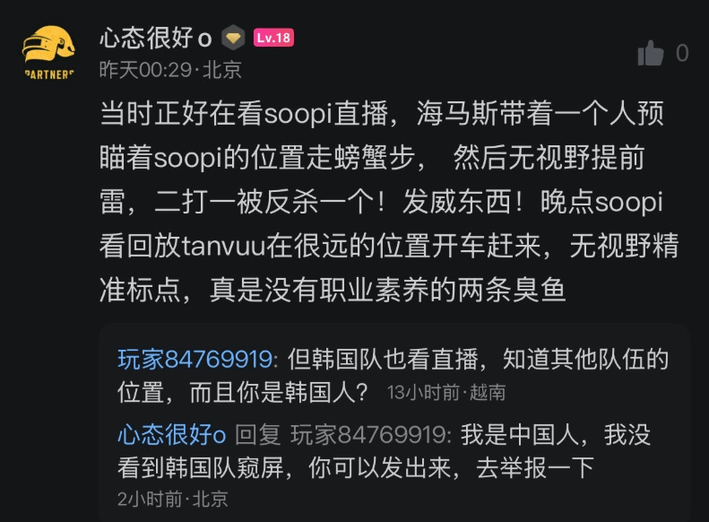
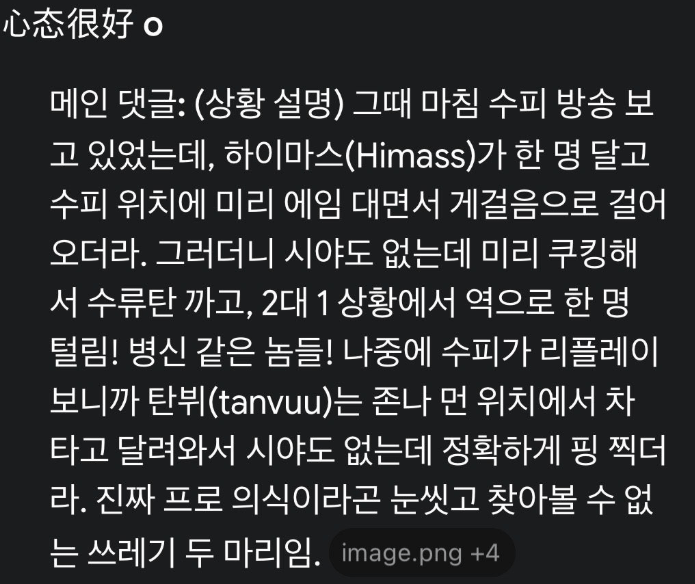

https://m.dcinside.com/board/pubgkl/657133?recommend=1
따---거


https://m.dcinside.com/board/pubgkl/657133?recommend=1
따---거
중국은 핵을 쓰지 방플은 안하지
재네들 프로들한텐 엄청 엄격함 ㅋㅋㅋㅋㅋ
재미로 하는 유저들(for fun)은 핵 좀 써도 지네들끼리 욕 하다 마는데
프로가 프로답지 않은 행동하면 활동 못함 개까임 진짜
롤 보면 프로한테는 진심같던데
ㅋㅋ쟤네 그러면 자국 욕보였다구 존나욕먹음ㅋㅋㅋㅋㅋ
중국은 중국 이미지를 엄청 크게 생각해서 공식대회에서는 ㅈㄴ 칼같음
공식 대회에서 중국 위상을 떨어뜨리는 짓을 한다? 바로 척살령이여
중국입장에서도 "교주" 출신 짭중국인들이 미개해 보이나보네
베트남의 북속기(北屬期, Thời Bắc thuộc)
= 기원전 111년에서 기원후 938년까지 이어진 시대
= 약 1000여 년에 걸친 중국의 통치기
그 그건 조심해 우리도 유주 한사군으로 걸린다
제일 빨리 사라진건 기원후 82년.
제일 늦게 사라진건 기원후 404년(현도군)
뭐 그렇네. 걍 기원후938년까지가 좀 충격이였어
트위터에서 동북아 애들은 말이라도 통한다는게 ㄹㅇ이였던거임
사람의 저점 원숭이의 고점 ㄹㅇ ㅋㅋㅋㅋㅋㅋㅋ
ㄹㅇ 욕설이 오고간다 하더라도 의견을 교환할수 있다는게 얼마나 대단한건지 깨달음
한중일을 까는건 서로만이 할수있다구~
임시 동맹이다
중국한테도 매너없다고 욕쳐먹는거면 진짜 심연 그 자체네
근데 중국 베트남 관계도 존나 재밌잖아 우리보다 더할텐데 ㅋㅋ
의식이라는게 정말 중요한거같음
프로의식없는 프로를 누가 좋아하겠냐고
이후행보는 더 레전드
??? : 뭔 프로의식이야 걍 게임하니까 돈주던데?
저긴 순수 베트남 혐오도 우리보다 한수 위잖아 ㅋㅋ
한중일 : 서로에게 악의가 있어서 무언가 근거(날조더라도)로 약점을 공격해 상대방을 까내림
미개국 : 그냥 말이 안 통함 상식이라는게 없음
선동과 날조로 싸울뿐!
전자: 싸움이 성립됨.
후자: 숨이 턱 막힘. 창피함이라곤 없나 싶음
중국은 그래도 자기나라에 자부심 있어서 공식적인 자리에서는 사리지 베트남은 그런것도 없음 ㅋㅋ
동북아는 ㄹㅇ 최소한의 공감대라도 형성해서 말이라도 통하는구나 ㅋㅋㅋ
야 수문 닫아라
중국이 의외로 이스포츠 관련해서 프로의식을 중요하게 생각함
중국도 한국따라서 이스포츠가 발전한 국가고 나름의 역사와 정체성도 있음
우가우가 하다가 이제 막 게임 보급된 상금헌터 수준의 양아치 똥트남이랑 결이 다름
프로는 이기는게 직업이 맞긴한데 자기 실력으로 이겨 몸값 올려야지
중국에도 치팅에 대해 비판하는 문화가 있음?
일반 유저는 전혀 없는데 프로한테는 엄격함
동북아 동남아 나눠둔 이유를 깨달았다
애들아 중국 세탁기 돌리지 마라. 중국애들이 껴있는건지, 베트남 욕하기 바뻐서 중국을 올려치기하는건지는 모르겠는데. 배그를 정말 사랑했다가 접은 유저로써, 중국은 악이다.
왜 댓글에서 중국은 프로의식이 있다는 헛소리가 슬금슬금 기어나오는지 모르겠는데, 중국도 프로/파트너들이 핵쓰다가 걸린놈들 한두명 아님. 배그에선 제일 유명한게 2021년에 파트너 리그에서 한중전에서 중국선수 6명 실시간 밴당했음. 프로인 애들도 있었고. 이 사태 일어나고, 무료화되서 중국 바퀴벌레들이 핵 존나게 쓰면서 그때 접음. https://www.dogdrip.net/373325300
베트남놈들이나 중국놈들이나 똑같은 새끼들이라는걸 잊지마라.
지금 사태의 문제는, 옛날에는 배그 주인님이 중국이었고 지금은 주인님이 베트남인거다.
다시 한번 말하지만, 베트남이 잘못했다고 중국 평가가 올라가면 안된다.
한중일이 물고 뜯던게 소통이 가능해서였다는 충격
중국도 베트남싫어하는거 하나는 와따지.